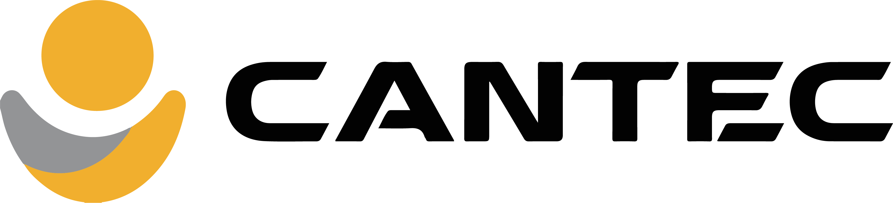
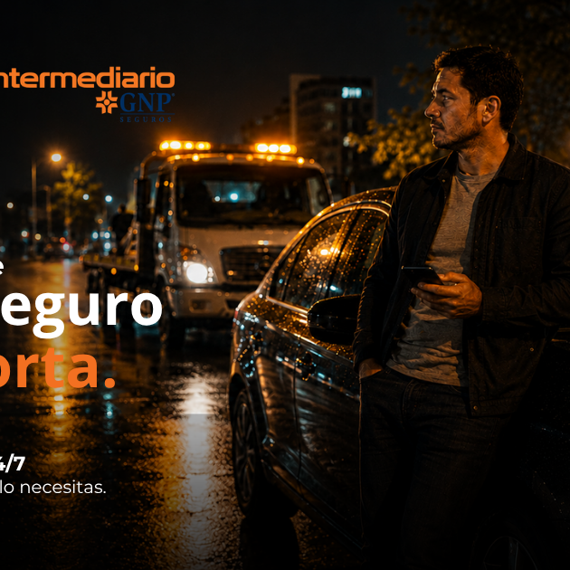
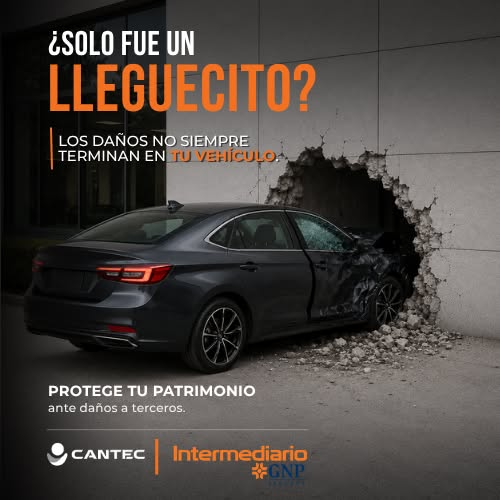
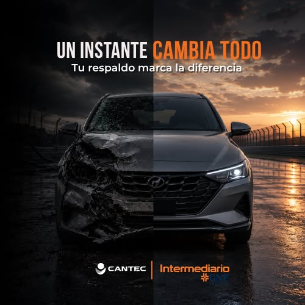

La arte que más jala: trae 2 de cada 3 leads al menor costo. La foto real (situación de asistencia/urgencia) genera identificación inmediata y el sello "Intermediario" da confianza. Conecta especialmente con hombres 45+. Acción: escalar presupuesto y producir variantes de esta misma línea visual.

El gancho de daños a terceros ("protege tu patrimonio") genera volumen sólido, pero 32% más caro que la ganadora. El tono de siniestro atrae pero convierte algo menos que la foto de asistencia. Sirve para diversificar y no saturar a la audiencia con un solo mensaje. Acción: mantener con presupuesto acotado como creativo de apoyo.

No recibió pauta real: apenas 462 impresiones. El CTR alto (3.9%) es engañoso por el bajísimo volumen, no es una señal confiable. Acción: decidir entre darle un presupuesto de prueba justo para evaluarla, o apagarla para no fragmentar la entrega del resto.
| Segmento | Inversión | Leads | CPL |
|---|---|---|---|
| Hombres 65+ | $1,334 | 27 | $49.4 |
| Hombres 45-54 | $1,269 | 18 | $70.5 |
| Hombres 55-64 | $1,625 | 20 | $81.3 |
| Hombres 35-44 | $648 | 8 | $81.0 |
| Hombres 25-34 | $330 | 4 | $82.5 |
| Mujeres (todas) | $739 | 9 | $82.1 |
89 prospectos en 25 días a un CPL de $68.79 MXN, con CTR de 2.44%. La tasa de conversión clic→lead de 31.4% indica que la oferta resuena con quien hace clic.
La arte de asistencia/emergencia trae el 63% de los leads y al costo más bajo. Riesgo: dependemos de un solo creativo. Acción: producir variantes de esa línea antes de que se desgaste.
El 89% de los leads son hombres; los 65+ rinden el CPL más bajo ($49.4). Reasignar presupuesto a este núcleo y reducir mujeres 18-34 (sin conversiones).
Gasto promedio de $245/día con CPM bajando (~$300 → ~$220). Hay margen para subir presupuesto en la arte y segmentos ganadores sin deteriorar el CPL.